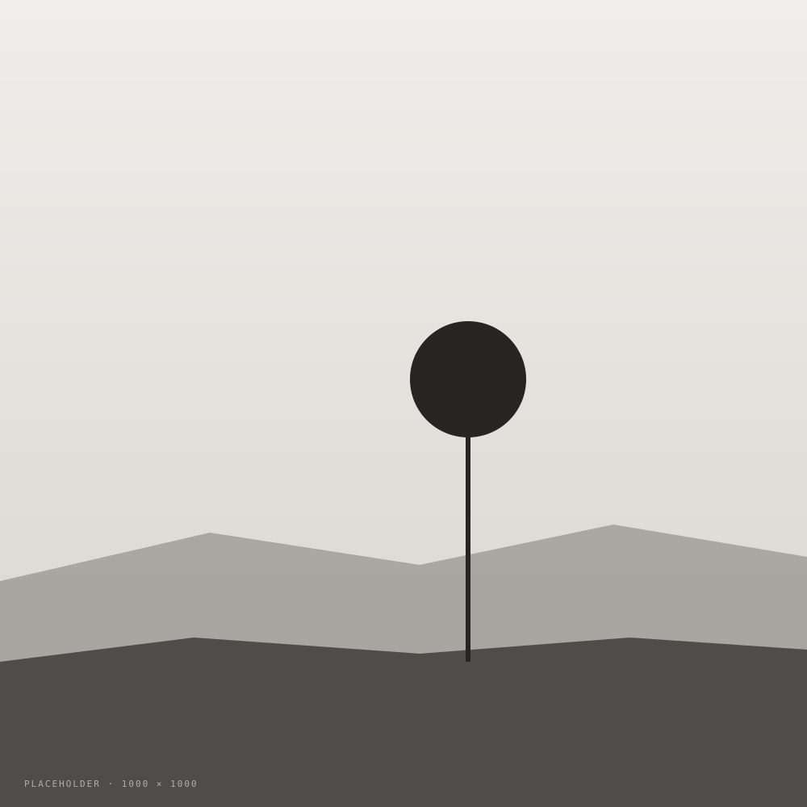
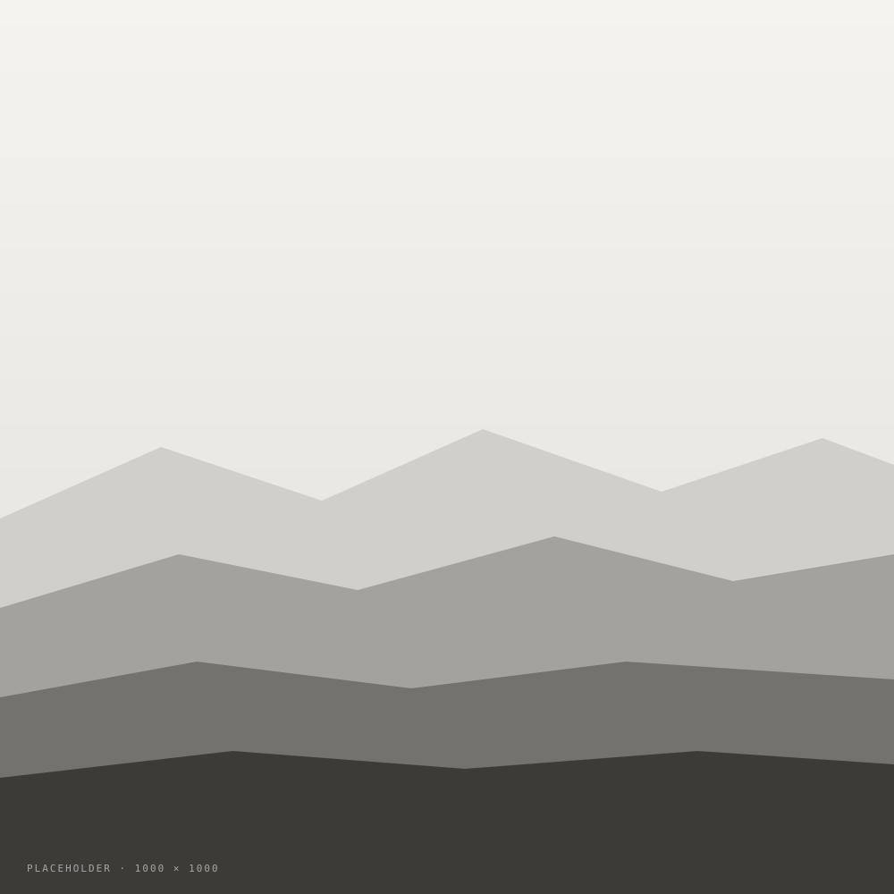

A morning in the Dolomites
A sample post, kept deliberately short, so you can see how images, captions, and galleries fit alongside the text without crowding it. Duplicate this file, rename it (for example post-dolomites.html), and edit the words.
The morning began an hour before sunrise, with a thermos of tea and a walk uphill that felt longer than it was. The ridge opened after a final switchback; the sky, when it finally arrived, arrived all at once. It's the kind of view that makes you write nothing down and take too many photographs.
An inline figure with a caption
For any image that should have a caption under it, wrap it in a <figure> with a <figcaption>. The figure sits in the normal flow of the prose — the image stays within the reading column so the eye doesn't have to re-settle.

If you'd rather skip the caption, you can drop a plain <img> tag between two paragraphs. The CSS sizes it gracefully either way.
A small gallery
When two photos belong together, wrap them in <div class="gallery">. On phones the gallery quietly stacks into a single column — no extra work needed.

A wide image, for a bigger breath
Add the class post-wide to a figure and it breaks out beyond the prose width — good for panoramas and landscapes that deserve more space.
That's the whole pattern — figure + img + figcaption inside the prose, and a gallery for grouped shots. The typography, margins, and the reveal animation are all already set up in styles.css, so you don't need to touch the CSS to make a new post.
To use this template: duplicate post-template.html, rename it (for example post-dolomites-2026.html), and change the title, date, and text. Drop your images into the images/ folder and update each src="images/…" to match the filename. Always fill in alt="…" with a short plain-English description — that keeps the site accessible for screen readers and search engines.